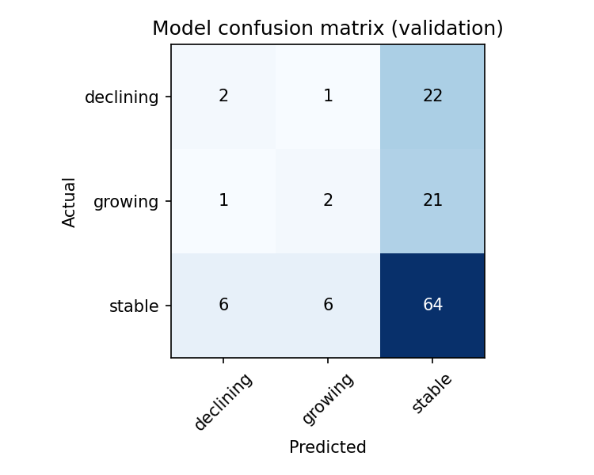
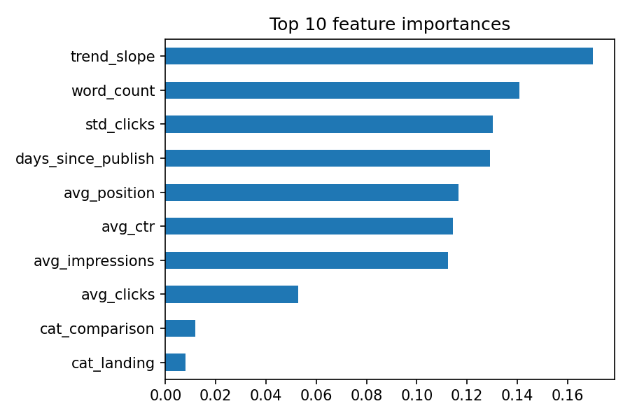
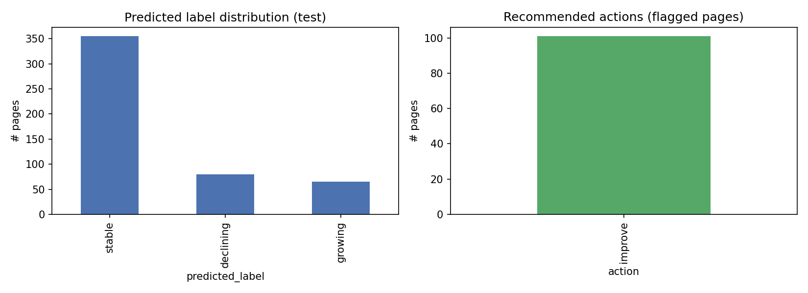

A content or SEO team can't manually review every page every sprint. The practical decision this work supports is: given limited review capacity, which pages should be looked at first, and what should the review actually check for? A page flagged "declining, still ranks near the top, hasn't been refreshed in 2+ years" is a different priority — and a different task — than one flagged "declining, ranks poorly, thin content." The goal here is a ranked action list a team could plausibly work from, not just a label.
This analysis runs on the real FlyRank ML Internship search-visibility warehouse:
fact_content_daily_performance (daily GSC clicks, impressions, and average
position per page) joined to dim_content (word count, content creation date)
on client + content identifiers. No client names, domains, raw URLs, private query
strings, or Google-algorithm causal claims appear anywhere in this analysis — all page
identifiers are the warehouse's own anonymized hashes.
fact_content_daily_performance_sample.parquet), which covered only 5 days of
history. That forced a compressed window design — a single-week feature window, a
2-week label window, and a 2-week held-out test window — instead of the originally
planned 12/4/4-week split. This is flagged explicitly in Limitations below: it's the
single biggest caveat on these results, and re-running against the full
fact_content_daily_performance/ table (78.8M rows, spanning much more
history) with the full 12/4/4-week design is the natural next step.
Primary metric: clicks. Within the label window, we compare the early
half against the late half; a page is growing if late-window clicks exceed
early-window clicks by 15% or more, declining if the reverse, and
stable otherwise. Label balance on this data: 71.5% stable, 15.7% declining,
12.8% growing.
Computed from the feature window: average clicks, impressions, CTR, and position; click volatility; a within-window trend slope; word count; and days since content creation. With only a single-week feature window in this run, the trend slope feature carries almost no signal (there's no "early half vs. late half" within one week) — see Limitations.
Baseline: a rule using trend slope alone. Model: a gradient-boosted tree classifier
(scikit-learn GradientBoostingClassifier), same features, same split.
Split is group-aware (by page) and the label/feature windows are time-separated by construction, so no page's future leaks into its own features. A leakage assertion confirmed the three windows (feature: week 0; label: weeks 1–2; test: weeks 3–4) are pairwise disjoint before modeling began.
The baseline's 68.8% is misleadingly high — it comes entirely from predicting "stable" for everything (0% precision/recall on declining and growing), since trend slope is uninformative over a single-week feature window. The model still beats it meaningfully on accuracy and, more importantly, actually identifies some declining pages (46% F1) that the baseline misses entirely.
Per-class performance, held-out test window (146,034 pages):
| Class | Precision | Recall | F1 | Support |
|---|---|---|---|---|
| declining | 0.67 | 0.55 | 0.60 | 35,391 |
| growing | 0.08 | 0.01 | 0.01 | 5,885 |
| stable | 0.84 | 0.93 | 0.88 | 104,758 |


avg_impressions dominates by a wide margin; trend_slope and std_clicks carry essentially zero importance — the direct fingerprint of a one-week feature window with no internal trend to measure.
fact_content_daily_performance/ table with proper multi-week windows is the clear next step before trusting these numbers as representative.avg_position values below 1 appear in the top-ranked recommendations (e.g. 0.47, 0.63) — outside the normal 1–100+ range for Google average position. This looks like a data or aggregation artifact worth investigating before treating position-based priority ranking as fully reliable, rather than a sign the page is ranking impossibly well.Top of the ranked action list, 62,805 pages flagged out of 146,034 (full table in the repo):
| Page (hashed) | State | Avg. position | Action | Reason |
|---|---|---|---|---|
| client_8ddc46da..._content_d584c27d... | declining | 0.47 | improve | CTR below typical range for its position |
| client_73cda7b4..._content_de9e46db... | declining | 0.63 | improve | no strong signal — monitor |
| client_62f4a7e6..._content_674f272d... | declining | 0.67 | improve | CTR below typical range for its position |
| client_62f4a7e6..._content_8022d335... | declining | 0.81 | improve | CTR below typical range for its position |
| client_23a62021..._content_829a0bbd... | declining | 0.92 | improve | CTR below typical range for its position |
Priority weights declining pages that still rank well highest — the biggest opportunity-per-effort, since ranking work is mostly already done. (Page identifiers are the warehouse's own hashed IDs, not real URLs.)
This run was executed end-to-end in Google Colab against the real FlyRank Hugging Face
warehouse (fact_content_daily_performance_sample.parquet joined to
dim_content.parquet), using DuckDB to query hf:// directly.
The executed notebook, full ranked recommendations (62,805 rows), and all charts above
are in this repo.
Local pipeline, in order (structurally identical to the Colab version):
work/01_data_exploration.ipynb — schema and sanity checkswork/02_label_design.ipynb — label definition noteswork/03_label_pipeline.ipynb — label computation + leakage assertionwork/04_features_and_split.ipynb — feature engineering + group splitwork/05_modeling.ipynb — baseline vs. model, confusion matrix, feature importancework/06_reason_codes.ipynb — reason-code generationwork/07_capstone_notebook.ipynb — full pipeline, final test evaluation, ranked recommendations
Real-data logic lives in work/_lib.py::load_search_data_REAL() (DuckDB +
hf:// query) and the executed Colab notebook
flyrank_capstone_colab.ipynb in this repo. Next step for higher-confidence
results: point the same query at the full fact_content_daily_performance/
folder (78.8M rows) instead of the sample, which unlocks the full 12/4/4-week window
design (see Limitations).